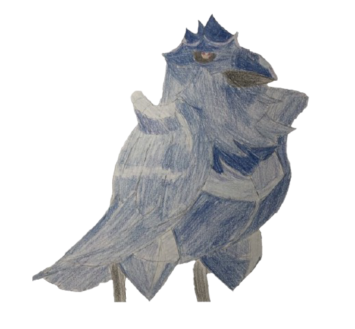

|  |
去年はコロナの影響で家にいる時間が多かったので、比較的たくさんアニメを見た気がします。 特に時間があったので長編シリーズ(ジョジョとか)を見ることができてよかったです。
少し前まではアニメはテレビ |
| 1月 | シュタインズ・ゲート ゼロ |
あらすじ
いくつもの世界線を巡る無限の彷徨。その過酷な旅の中で、岡部は紅莉栖を死の運命から救い出すことを、ついに諦めた。そして、再び大学に通い始めた彼は、平凡な日常に埋没していく。それでも心の傷を癒しきれず、メンタルクリニックへの通院を続ける岡部の中で、いつしか白衣をまとった「鳳凰院凶真」の顔は封印されていた。(引用元:http://steinsgate0-anime.com/)
評価
★★★★★★★★★★ (10/10)
感想
本当に面白かった。シュタインズ・ゲート無印できれいに伏線回収して終わりかと思いきや、ゼロでまだまだ伏線がはられていたことに気づいたときは本当に感激した。無印しか見てない人は絶対に見たほうがいいと思う。
また、どの登場人物もいいキャラしてるのがよかった。(途中で崩壊してる人いた気がするけど)